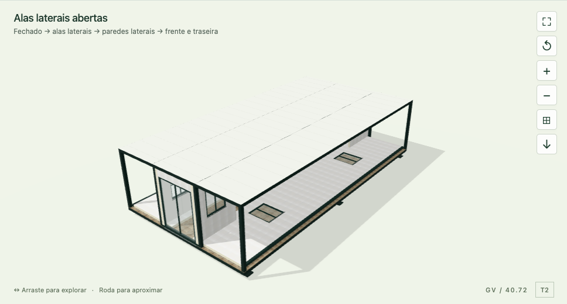
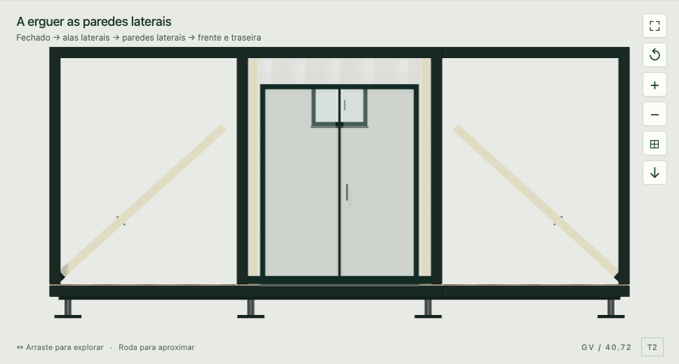

← Voltar ao portefólioGREEN VILLAGE · 12 DE SETEMBRO DE 2026
Alas abertas. Paredes erguidas.
Revisão R12: eliminada a preparação separada dos painéis e a inclinação da cobertura acima da horizontal.
O movimento corrigido
- Contentor recolhido, com a representação interior de arrumação identificada como ilustrativa.
- As coberturas abrem e param na horizontal. Os painéis laterais acompanham os pisos durante a abertura das alas.
- As paredes laterais, com as janelas, apenas se erguem.
- As paredes da frente e de trás abrem do interior para o exterior.

Alas abertas: os painéis já acompanham os pisos.
Elevação das paredes: cobertura nivelada durante todo o movimento.Verificações executadas
| Verificação | Resultado |
|---|
| Regressões funcionais e documentais | 41 grupos aprovados |
| Transformações do modelo real | 7 plantas × 1 001 posições |
| Saída e regresso à expansão | 56 ciclos aprovados |
| Revisão independente do movimento | 7 007 posições; peças rígidas e posição final preservada |
| Revisão no navegador | 47 registos; reprodução de 24,143 s, pausa, reinício, retrocesso e câmaras |
| Telemóvel e computador | 375 e 1 440 px, quatro etapas acessíveis |
| Retorno inferior recolhido | 280 raios atingem o fecho recuado; 126 raios confirmam o piso livre |
Os controlos de captura e regresso à mesma vista foram também verificados. Sem erros de execução no navegador. Um pedido de vídeo cancelado durante a navegação foi registado separadamente de erros da aplicação.
Âmbito da representação
A ordem segue a explicação do cliente. O eixo interior de abertura dos pisos, o retorno inferior e o recolhimento dos postes são hipóteses visuais. O retorno inferior acompanha rigidamente o piso e permanece sob o pavimento na casa aberta. O ensaio verifica cobertura visual recuada; não comprova uma caixa de transporte estanque, uma superfície exterior contínua ou um mecanismo de fabrico sem colisões. Os desenhos de articulações e recolhimento continuam por fornecer.
A casa mantém as dimensões finais, materiais, plantas e janelas. O filme histórico R9 continua identificado como registo da elevação das paredes; não é apresentado como vídeo deste processo completo.
Registos da auditoria